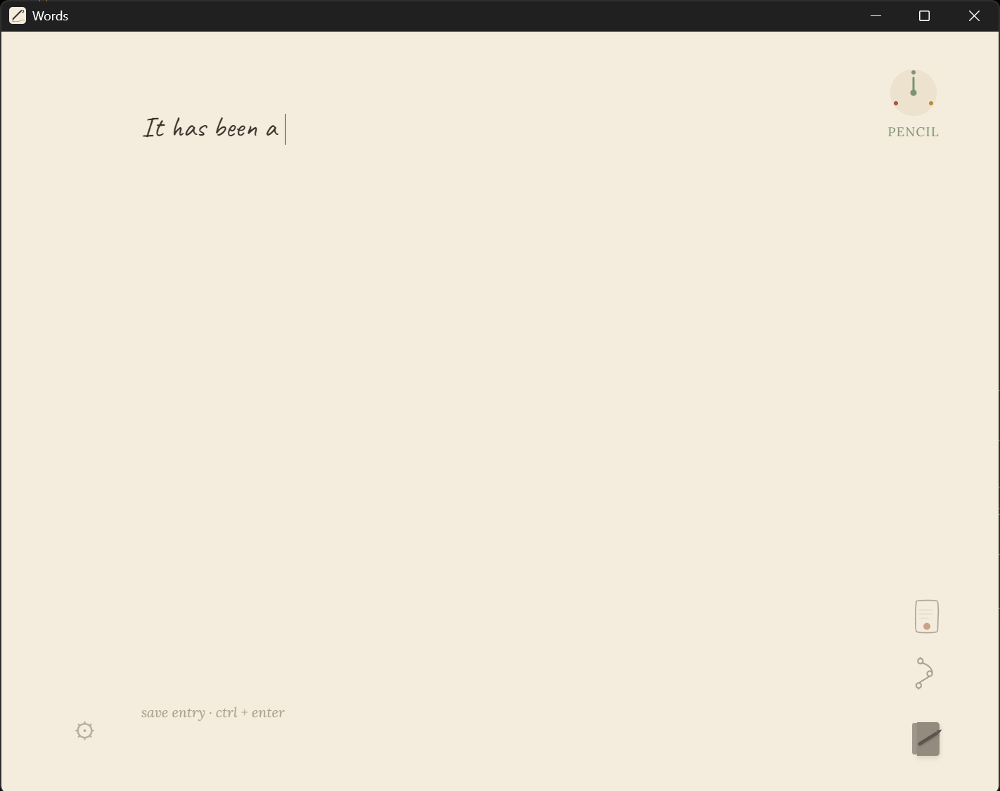
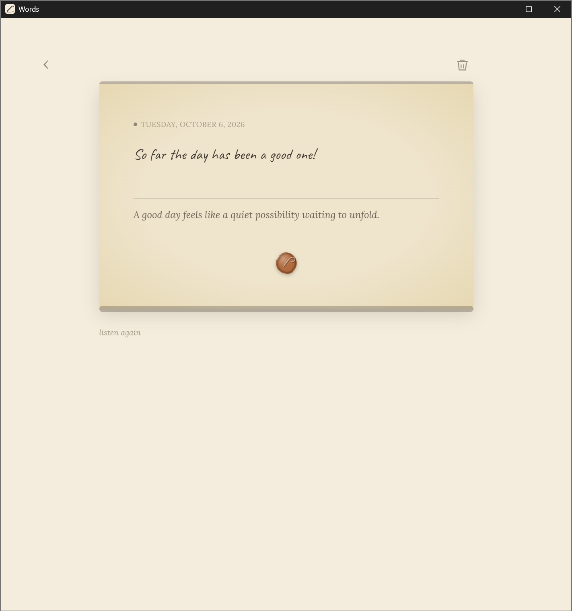
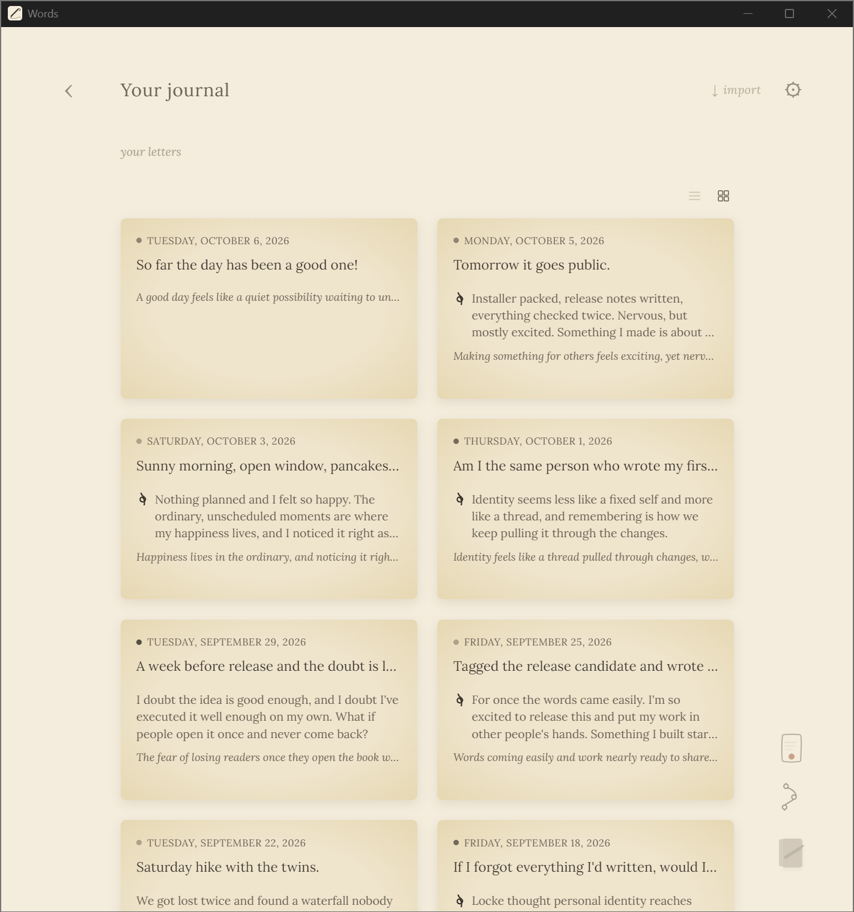
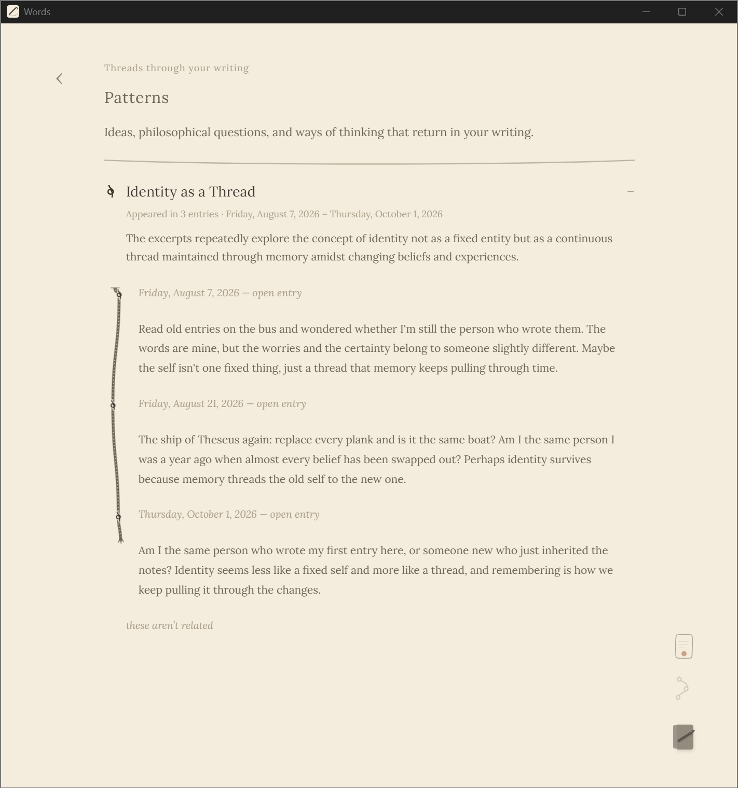
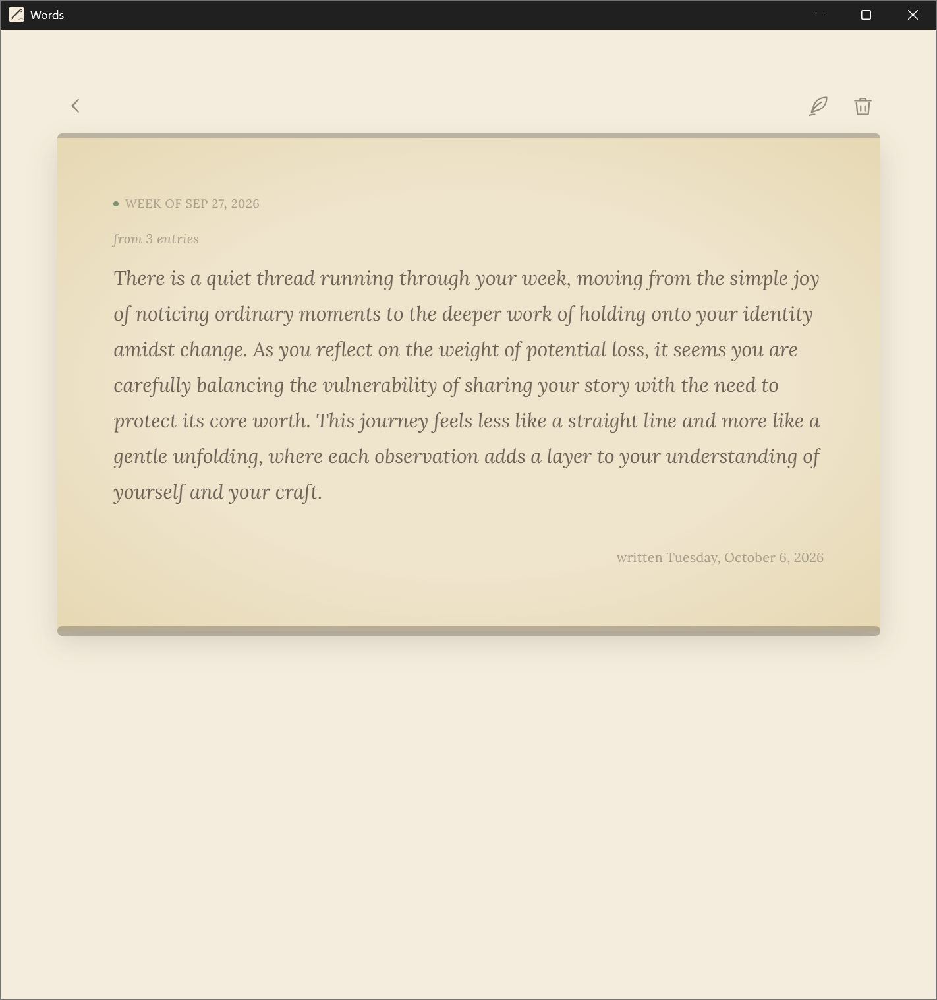

What Words is
Words is a living journal. It helps you reflect on your thoughts and see the patterns in your thinking.
It's not here to judge you. It's here to show you the things you keep coming back to in your writing.
It uses a local embedding model to remember what you write, and a local instruct model to surface the patterns. Everything stays in-house, on your own computer. So there's no fear about who will see what you've journaled. Nobody does.
What it does

You just write
It opens straight to a blank page. No dashboard, nothing to set up. Press Ctrl+Enter or click save entry when you're done.

It reflects back, gently
After you save, a short line fades in. It notices a thought or a question in what you wrote. It doesn't give advice, it doesn't label you. If you want another take, hit listen again.

It remembers
When you write something you've written before, maybe months ago and in different words, it shows you that earlier passage with its date, so you can go back and read it.

It finds your patterns
Once an idea keeps showing up, across at least three entries on three different days, it shows up in Patterns, with the dates and the actual lines you wrote.

It writes you letters
At the end of a week, a month or a year, Words writes you a short letter from what you wrote in that time.
Your writing stays yours
- Everything runs on your computer. Nothing you write is ever uploaded.
- Your entries are plain files in
%APPDATA%\words\. - The only thing Words downloads is the two models, once, on first run. After that it works offline.
- If you uninstall, it asks whether to delete your journal too. The default is no.
Why I made this
This is an experiment.
Models keep getting better, and they're becoming easier for normal people to run. I believe we'll start seeing everyday applications that run on the user's own GPU, locally, instead of always going to a cloud model. I'm not trying to get rid of cloud solutions. I want to show that something simple, something you'd use every day, can use the power of your own GPU to do things a CPU has a hard time with, without invading your privacy, just by picking the right models for the job.
I think we're already heading that way. Words is my small contribution to what everyday apps might look like soon: you don't need to know how to configure a GPU, or it becomes common knowledge, or it just comes preconfigured, the way it does with games.
A hybrid era is here, where the CPU and GPU both drive a simple application. The question is how.
— Pawan
Install (Windows)
- Download the installer from Releases.
- Windows will probably warn you, because the installer isn't signed (I don't have a code-signing certificate). Click More info → Run anyway.
- Open Words and start writing. The models (about 6.3 GB) download in the background on first run. You can write and save while they download; reflections and memory start once they're ready.
You'll want a GPU. Words uses your graphics card automatically through CUDA or Vulkan, so there's nothing to configure. A recent graphics card with 8 GB or more of VRAM works well. Without a GPU it still runs on the CPU, just much slower.